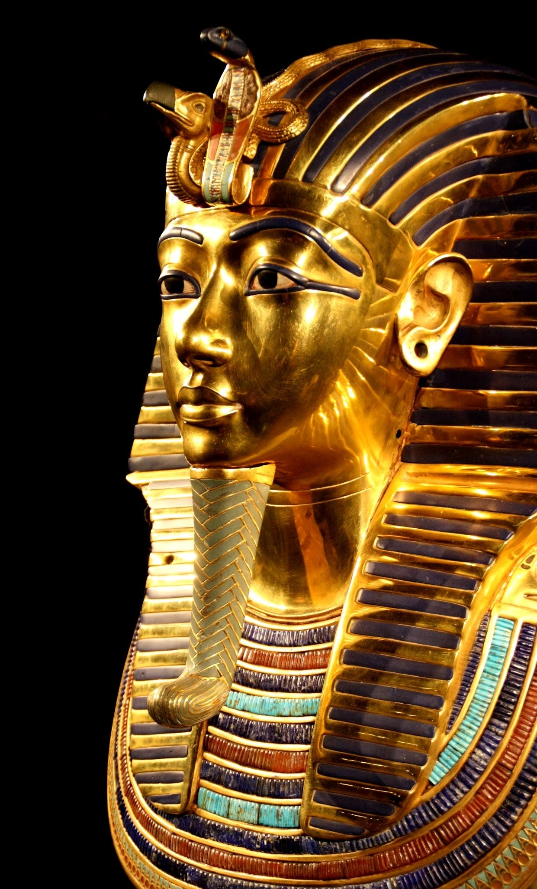

À propos de Toutankhamon
Il est aujourd’hui le plus célèbre des pharaons, un personnage à succès.
Toutankhamon a bien failli rester dans l’ombre à jamais, ses successeurs ayant tenté d’effacer toutes traces de lui.
La dernière fois qu’une exposition d’une telle ampleur avait été organisée remonte à 1967.
La découverte extraordinaire en 1922 par le britannique « Howard Carter ».
Succès d’ampleur avec, à l’époque, 1,2 million de visiteurs : elle avait été considérée comme « l’exposition du siècle ».
Une rumeur s’abat sur la malédiction qui s’abat sur les personnes qui on découvert Toutankhamon meurt juste après comme «Lord Carnarvon ».
